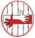
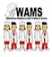

Home
Home What we do
What we do Signup to Medsin
Signup to Medsin Calendar
Calendar Committee
Committee Elective Placements
Elective PlacementsWhat we do at Medsin Birmingham Educate, Advocate, Act
We have a lot going on at the moment; scroll below to have a look at a selection. Please also visit our vision statement page.
Teddy Bear Hospital
TBH is a society that aims to help children overcome any fears or worries they may have regarding doctors, dentists or hospitals, through role play.Crossing Borders
 Crossing Borders works with issues concerning refugees and asylum seekers, especially related to healthcare access in the Birmingham area.Birmingham Marrow
Birmingham Marrow is a student-led group committed to recruiting potential donors to the Anthony Nolan Trust Bone Marrow Register. Students who sign up are matched against patients requiring a BMT. If a match is identified they may go on to donate bone marrow and save someone’s life. The more students, the more likely a match will be found. Signing up is quick and easy, but there are many additional ways to help:becoming a counsellor,by getting involved with fundraising, publicity, training and education. Get in touch!Sexpression:UK
Sexpression is a nationwide society that teaches Sex Ed to Schools! We currently teach children from yr 7 – 9 and at a local college. All our members get fully trained so you know exactly what to teach and we travel to the schools on a Wednesday afternoon! We also hold a number of other activities and talks for members to get involved in. So for anyone who’s even slightly interested in teaching and/or sexual health, contact Sexpression.Cancer Research UK
Welcome to Birmingham's newest and most exciting charity committee. We are dedicated to fundraising on behalf of Cancer Research UK and spreading awareness of cancer and public health throughout the West Midlands. Our ambitious target for our first year is £5000. If anyone has any fundraising ideas or projects they would like us as a committee to support please get in touch.BWAMS
 Birmingham Widening Access to Medical School (BWAMS) is a society that aims to inform pupils from less privileged schools about courses in medical subjects at university. This includes medicine, nursing, physiotherapy and dentistry and we welcome members from all specialities. Our members take part in various events each year, visiting secondary schools around the Birmingham area to run teaching workshops and give advice. BWAMS also works with the university Outreach department who run mock interviews and days on campus for school pupils hoping to come to university. Get in touch!Student Stop AIDS
 Student Stop AIDS is a place to plan World AIDS day events and future attempts to lobby the UK government and educate our peers!
Student Stop AIDS is a place to plan World AIDS day events and future attempts to lobby the UK government and educate our peers!
Water4All
The Water4All campaign works in conjunction with the organisation WaterAid by organising fundraising and awareness raising events relating to access to water and sanitation.Global Medical Brigades
Global Brigades is 'the world’s largest student-led global health and sustainable development organisation’, sending out thousands of volunteers every year. This year we want you to come abroad with us – to set up and run a mobile clinic and pharmacy, to do health promotion work, to make homes more sanitary, to go travelling and much much more! Get in touchMOFO (Medics Operating For Others)
MOFO is a Birmingham medschool society which raises money for 4 different charities: St. Oswald's Hospice, Wish Upon A Star, National Autistic Society and Birmingham Marrow. We put the 'fun' back into fundraising by holding bucket shakes in town wearing fancy dress! We have loads of new, exciting events planned for the upcoming year so make sure you get involved